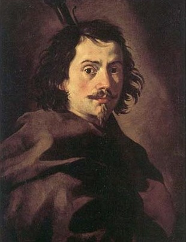

Francesco Borromini
Bienvenidos al sitio dedicado a Francesco Castelli, conocido como Borromini (1599–1667). Junto a Gian Lorenzo Bernini y Pietro da Cortona, fue uno de los arquitectos más revolucionarios del Barroco italiano. Su obra se distingue por un uso audaz de la geometría, un manejo dramático de la luz y la constante experimentación con plantas y volúmenes curvos, creando espacios que parecen cobrar vida. A pesar de ser considerado excéntrico por sus contemporáneos romanos, su legado y sus audaces soluciones espaciales influyeron enormemente en el desarrollo de la arquitectura europea posterior.
